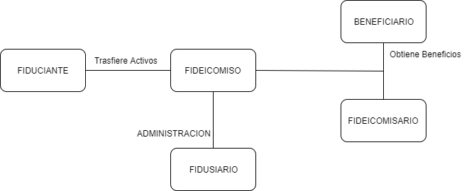

Un fideicomiso es un contrato o convenio en virtud del cual una persona, llamada fideicomitente o también fiduciante, transmite bienes, cantidades de dinero o derechos, presentes o futuros, de su propiedad a otra persona (una persona física, llamada fiduciaria), para que ésta administre o invierta los bienes en beneficio propio o en beneficio de un tercero, llamado fideicomisario.
Cabe señalar que, al momento de la creación del fideicomiso, ninguna de las partes es propietaria del bien objeto del fideicomiso. El fideicomiso es, por tanto, un contrato por el cual una persona destina ciertos bienes a un fin lícito determinado, encomendando la realización de ese fin a una institución fiduciaria en todas las empresas.
Técnicamente, el contrato de fideicomiso se da entre dos partes: fideicomitente/fiduciante - fideicomitido/fiduciario; aunque la relación fiduciaria se da entre 4 sujetos: los antes mencionados, más el beneficiario (que puede o no existir) y el fideicomisario.
El fiduciante o fideicomitente, que es la parte que transfiere a otra bienes determinados. Tiene que poseer el dominio pleno de los bienes dados en fideicomiso.
El fiduciario, que es la parte a quien se transfieren los bienes, y que está obligada a administrarlos con la prudencia y diligencia propias del buen hombre de negocios (administrar lo ajeno como propio), que actúa sobre la base de la confianza depositada en él. Puede ser cualquier persona física o jurídica.
El beneficiario, que es la persona en cuyo beneficio se ha instituido el fideicomiso (puede o no existir), sin ser el destinatario final de los bienes. Pueden ser una o varias personas físicas o jurídicas. El fideicomisario, que es el destinatario final o natural de los bienes fideicomitidos. Normalmente, el beneficiario y el fideicomisario son una misma persona. Pero puede ocurrir que no sea la misma persona, puede ser un tercero, o el propio fiduciante.
El fideicomiso es, en general, una estructura de garantía. La base del fideicomiso es un "contrato"; este documento lo regula y se adecua a cada proyecto o caso en particular. La clave Es el contrato.